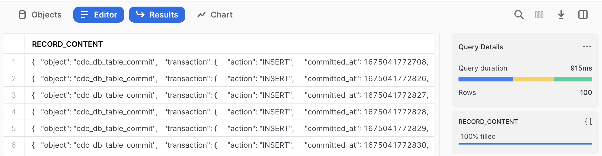

This guide will take you through a scenario of using Snowflake's Snowpipe Streaming to ingest a simulated stream, then utilize Dynamic tables to transform and prepare the raw ingested JSON payloads into ready-for-analytics datasets. These are two of Snowflake's powerful Data Engineering innovations for ingestion and transformation.
A simulated streaming datafeed will be generated for this exercise, using a java client running on your desktop, that implements the Snowpipe Streaming SDK. The simulated datafeed will be Stock Limit Orders, with new, changed, and cancelled orders represented as RDBMS transactions logs captured from INSERT, UPDATE, and DELETE database events. These events will be transmitted as JSON payloads and land into a Snowflake table with a variant data column. The simulation will be high-volume, first starting at 1 million transactions in seconds and secondly as steady stream. Finally, data will contain sensitive fields, so our process will have extra protections for this.

This is the same type of stream ingestion typically created by Change-Data-Capture (CDC) agents that parse transaction logs of a database or event notification mechanisms of modern application. However, this could be simulating any type of stream, in any industry. This streaming ingestion use case was modeled similarly to one previously handled with Snowflake's Kafka Connector, but no Kafka is necessary for this use case as a Snowpipe Streaming client can enable replacing the Kafka middleware infrastucture, saving cost & complexity. Once landed, Dynamic Tables are purpose-built Snowflake objects for Data Engineering to transform the raw data into data ready for insights.
The Use Case
Our Source ‘database' has stock trades for the Dow Jones Industrials, 30 US stocks. On average 200M-400M stock trades are executed per day. Our agent will be capturing Limit Order transaction events for these 30 stocks, which are new orders, updates to orders (changes in quantity or the limit price), and orders that are cancelled. For this simulation, there are 3 new orders for every 2 updates, and then one cancellation. This scenario's datastream will first reproduce a heavy workload of an initial market opening session and secondly a more modest continuous flow. Snowflake data consumers want to see three perspectives on limit orders: what is the "current" list of orders that filters out stale and cancelled orders, a historical table showing every event on the source (in a traditional slowly changing dimension format), and current orders summarized by stock ticker symbol and by long or short position. Latency needs to be minimized, 1-2 minutes would be ideal for the end-to-end process.
While not covered in this exercise, more Snowflake capabilities can further enrich your incoming data using Snowflake Marketplace data, train and deploy machine learning models, perform fraud detection, and other use cases. This Lab was to introduce you to real-time streaming ingestion and then transformation, making processing easier and more scalable than ever before.
Prerequisites
- Familiarity with Snowflake, basic SQL knowledge, using your desktop command line and executing a java program
- Have a Java JRE/JDK Runtime environment on your laptop/desktop (confirm by running "java -version" showing v11 or higher). Suggest OpenJDK 20 or higher if installing.
What You'll Learn
- Create Private & Public keyfiles and using them for keypair authentication into Snowflake
- Introduction to Snowpipe Streaming Java API, with a sample client and JSON-format datastream generator
- Ingest real-time semi-structured data into Snowflake and store as Variant datafield
- Create Dynamic Tables to do in-Snowflake ELT processing easier than ever before
- How to perform field-level AES-based data encryption at-the-source for security but governance controls for those authorized downstream
What You'll Need
To complete this Quickstart, attendees need the following:
- A Snowflake Enterprise or Business Critical Account with ACCOUNTADMIN access or setup assistance
- Be able to download a SQL and a Zip file
- Be able to run "keytool" command on your desktop (a utility included with Java)
- Be able to run a Java program from the command line on your desktop
What You'll Build
- User and Roles to control authentication and security
- A Snowflake database that contains all data and objects built in this lab
- A Landing/Staging table to initially land your incoming data stream
- Analytics-Ready Dynamic Tables
- Secure Functions for decrypting sensitive fields
- Secure Views to distribute data to various audiences
a) Download
The first thing you will need to do is download the following two files. The first is a ZIP file you need to extract to a directory (for example C:/SnowflakeQuickstarts) that is the streaming simulator client. The second file contains a series of SQL commands to execute in a Worksheet throughout this lab Click the green buttons to access the page to download the files
b) Login
At this point login into your Snowflake account. If you have just created a free trial account, feel free to minimize or close hint boxes that are looking to help guide you. These will not be needed for this lab and most of the hints will be covered throughout the remainder of this exercise.
c) Create a Worksheet
In the Snowflake UI click on Worksheets on the left side. 
Create a new Worksheet by clicking on the ** + ** button on the top right side and click SQL Worksheet which will create a new worksheet in a tab. 
Next, from the Tab Menu you can rename the tab to something more meaningful and from the same menu click Import SQL from File and select the .sql file you downloaded and named earlier called Data_Engineering_Streams_CDC_DT_VHOL.sql. 
Each step throughout the Snowflake portion of the guide has an associated SQL command to perform the work we are looking to execute, and so feel free to step through each action running the code one command at-a-time as you walk through the lab.
a) Unzip and Prepare Java Client
Find where you downloaded your ZIP-compressed client application in step 2a), for example C:/SnowflakeQuickstarts. Extract file CDCSimulatorApp.zip file which will create a CDCSimulatorApp directory and many files within.
b) Generate Public and Private Keys
From your desktop's Command Line / Terminal window, navigate to your working directory, then the directory extracted (CDCSimulatorApp) and run these two commands:
openssl genrsa 2048 | openssl pkcs8 -topk8 -inform PEM -out rsa_key.p8 -nocrypt
openssl rsa -in rsa_key.p8 -pubout -out rsa_key.pub
Open file rsa_key.pub with a simple text editor and be prepared to copy your key soon in step 3.e, which is everything in-between the "- - - -" lines. If ‘openssl' command is not found, you need to review your Java installation before proceeding.

(Yes, there will be carriage returns in the key, that is ok)
c) Create a Dedicated Role and Limited Login for your Streaming Application
Return to your Snowflake worksheet and run these commands, using the Public Key generated and file opened in Step 3.b above:
create role if not exists VHOL_CDC_AGENT;
create or replace user vhol_streaming1 COMMENT="Creating for VHOL";
alter user vhol_streaming1 set rsa_public_key='<Paste Your Public Key Here>';
d) Edit Properties File
You will need to edit the snowflake.properties file to match your Snowflake account name (two places):
user=vhol_streaming1
role=VHOL_CDC_AGENT
account=<MY_SNOWFLAKE_ACCOUNT>
warehouse=VHOL_CDC_WH
private_key_file=rsa_key.p8
host=<ACCOUNT_IDENTIFIER>.snowflakecomputing.com
database=VHOL_ENG_CDC
schema=ENG
table=CDC_STREAMING_TABLE
channel_name=channel_1
AES_KEY=O90hS0k9qHdsMDkPe46ZcQ==
TOKEN_KEY=11
DEBUG=FALSE
SHOW_KEYS=TRUE
NUM_ROWS=1000000
For assistance on Account identifiers
a) Create new roles for this Lab and grant permissions
use role ACCOUNTADMIN;
set myname = current_user();
create role if not exists VHOL;
grant role VHOL to user identifier($myname);
grant role VHOL_CDC_AGENT to user vhol_streaming1;
For the PII Section (Step #7):
create role if not exists PII_ADMIN;
grant role PII_ADMIN to user identifier($myname);
create role if not exists PII_ALLOWED;
grant role PII_ALLOWED to user identifier($myname);
b) Create a Dedicated Virtual Compute Warehouse
Size XS, dedicated for this Hands-on Lab
create or replace warehouse VHOL_CDC_WH WAREHOUSE_SIZE = XSMALL, AUTO_SUSPEND = 5, AUTO_RESUME= TRUE;
grant all privileges on warehouse VHOL_CDC_WH to role VHOL;
For the PII Section (Step #7):
grant usage on warehouse VHOL_CDC_WH to role PII_ADMIN;
grant usage on warehouse VHOL_CDC_WH to role PII_ALLOWED;
c) Create Database used throughout this Lab
create database VHOL_ENG_CDC;
use database VHOL_ENG_CDC;
grant ownership on schema PUBLIC to role VHOL;
revoke all privileges on database VHOL_ENG_CDC from role ACCOUNTADMIN;
grant ownership on database VHOL_ENG_CDC to role VHOL;
use role VHOL;
use database VHOL_ENG_CDC;
create schema ENG;
use VHOL_ENG_CDC.ENG;
use warehouse VHOL_CDC_WH;
grant usage on database VHOL_ENG_CDC to role VHOL_CDC_AGENT;
grant usage on schema ENG to role VHOL_CDC_AGENT;
grant usage on database VHOL_ENG_CDC to role PUBLIC;
grant usage on schema PUBLIC to role PUBLIC;
d) Create a Staging/Landing Table
Where all incoming data will land initially. Each row will contain a transaction, but JSON will be stored as a VARIANT datatype within Snowflake.
create or replace table ENG.CDC_STREAMING_TABLE (RECORD_CONTENT variant);
grant insert on table ENG.CDC_STREAMING_TABLE to role VHOL_CDC_AGENT;
select * from CDC_STREAMING_TABLE;
select count(*) from CDC_STREAMING_TABLE;
e) Test your Application and Test Connection to Snowflake
Return to your desktop, and run the program "Test.sh" or "Test.bat" to confirm your setup is complete and ready for ingestion.
./Test.sh
or (for Microsoft Windows)
Test.bat
You should see this:

If you get any errors / exceptions, read the error message closely and ask for help. As this application is running on your desktop, you may be missing a prerequisite, have an older version of Java, have too restrictive user profile, or many other reasons. Also check your snowflake.properties file to ensure you have the correct Account Name and Identifier set if you get connector errors. If authentication issues, check and review your public key configuration.
a) Run Streaming Application
You are now ready to Stream data into Snowflake! Execute the Streaming Simulator using ‘Run_MAX.sh', which will stream 1,000,000 records as fast as your desktop can run (MAX will also be in the Channel name):
./Run_MAX.sh
or (for Microsoft Windows)
Run_MAX.bat
Which returns:
This should take 10-20 seconds.
b) View New Records in Snowflake
Just like that, in a few seconds, you have 1M records in Snowflake (single-row inserts!)
select count(*) from ENG.CDC_STREAMING_TABLE;
select * from CDC_STREAMING_TABLE limit 100;
Each record is a JSON payload, received via Snowpipe Streaming Ingestion API and stored in a Snowflake table as rows and Variant datafields.

Next run 2 queries, using Snowflake's semi-structured capability, to show our new records and part of the query we will use in our Dynamic Tables before proceeding:
select RECORD_CONTENT:transaction:primaryKey_tokenized::string as orderid from ENG.CDC_STREAMING_TABLE limit 10;
select
RECORD_CONTENT:transaction:primaryKey_tokenized::varchar as orderid_tokenized,
RECORD_CONTENT:transaction:record_after:orderid_encrypted::varchar as orderid_encrypted,
RECORD_CONTENT:transaction:action::varchar as action,
RECORD_CONTENT:transaction:committed_at::varchar as committed_at,
RECORD_CONTENT:transaction:dbuser::varchar as dbuser,
RECORD_CONTENT:transaction:record_before::variant as before,
RECORD_CONTENT:transaction:record_after::variant as after
from ENG.CDC_STREAMING_TABLE
where RECORD_CONTENT:transaction:action::varchar='INSERT' limit 1000;
As you can see, it is very easy to work with Semi-Structured data. Our upcoming task of creating Dynamic Tables will take advantage of this.
c) But There is More Than One Table in My Source System
The CDC Agent could easily be capturing changes from more than one source table, lets prepare for that and write each dynamic table to only use the events received for our simulated Stock Limit Order stream. These are the key fields to use:
select distinct RECORD_CONTENT:transaction:schema::varchar,RECORD_CONTENT:transaction:table::varchar from CDC_STREAMING_TABLE;
a) The "Current State"
Create a more finished Dynamic Table sourcing from Landing Table that reflects the "CURRENT STATE" of the source table. This pattern, for each source table, you create a Dynamic Table:
CREATE OR REPLACE DYNAMIC TABLE ENG.LIMIT_ORDERS_CURRENT_DT
LAG = '1 minute'
WAREHOUSE = 'VHOL_CDC_WH'
AS
SELECT * EXCLUDE (score,action) from (
SELECT
RECORD_CONTENT:transaction:primaryKey_tokenized::varchar as orderid_tokenized,
RECORD_CONTENT:transaction:record_after:orderid_encrypted::varchar as orderid_encrypted,
TO_TIMESTAMP_NTZ(RECORD_CONTENT:transaction:committed_at::number/1000) as lastUpdated,
RECORD_CONTENT:transaction:action::varchar as action,
RECORD_CONTENT:transaction:record_after:client::varchar as client,
RECORD_CONTENT:transaction:record_after:ticker::varchar as ticker,
RECORD_CONTENT:transaction:record_after:LongOrShort::varchar as position,
RECORD_CONTENT:transaction:record_after:Price::number(38,3) as price,
RECORD_CONTENT:transaction:record_after:Quantity::number(38,3) as quantity,
RANK() OVER (
partition by orderid_tokenized order by RECORD_CONTENT:transaction:committed_at::number desc) as score
FROM ENG.CDC_STREAMING_TABLE
WHERE
RECORD_CONTENT:transaction:schema::varchar='PROD' AND RECORD_CONTENT:transaction:table::varchar='LIMIT_ORDERS'
)
WHERE score = 1 and action != 'DELETE';
If you run this right away, it will show a warning that table is not yet ready. You have to wait a bit for the refresh period and the Dynamic Table to be built
SELECT count(*) FROM LIMIT_ORDERS_CURRENT_DT;
– Wait for Lag Period (1 minute)
SELECT count(*) FROM LIMIT_ORDERS_CURRENT_DT;
Streaming Data is not Static Data
Let's work with dynamic data going forward, return to your desktop to provide a continuous stream. Run this command and the application will be streaming 10 records/second until you stop the application (using Cntrl-C in your command/shell window). If you want more volume, run the "Run_Sloow" for 100/second or "Run_Slow" for 1000/second stream rate, Snowflake will absorb these easily too. But simulator is designed to run only one of these at a time (channel name is configured in property file).
./Run_Slooow.sh
or (for Microsoft Windows)
Run_Slooow.bat
b) Slowly Changing Dimensions (SCD) Example
First table is great, but we want to analyze how orders/records have changed and keep a historical record. Let's do that by adding additional fields to each record to track and group them together:
CREATE OR REPLACE DYNAMIC TABLE ENG.LIMIT_ORDERS_SCD_DT
LAG = '1 minute'
WAREHOUSE = 'VHOL_CDC_WH'
AS
SELECT * EXCLUDE score from ( SELECT *,
CASE when score=1 then true else false end as Is_Latest,
LAST_VALUE(score) OVER (
partition by orderid_tokenized order by valid_from desc)+1-score as version
FROM (
SELECT
RECORD_CONTENT:transaction:primaryKey_tokenized::varchar as orderid_tokenized,
--IFNULL(RECORD_CONTENT:transaction:record_after:orderid_encrypted::varchar,RECORD_CONTENT:transaction:record_before:orderid_encrypted::varchar) as orderid_encrypted,
RECORD_CONTENT:transaction:action::varchar as action,
IFNULL(RECORD_CONTENT:transaction:record_after:client::varchar,RECORD_CONTENT:transaction:record_before:client::varchar) as client,
IFNULL(RECORD_CONTENT:transaction:record_after:ticker::varchar,RECORD_CONTENT:transaction:record_before:ticker::varchar) as ticker,
IFNULL(RECORD_CONTENT:transaction:record_after:LongOrShort::varchar,RECORD_CONTENT:transaction:record_before:LongOrShort::varchar) as position,
RECORD_CONTENT:transaction:record_after:Price::number(38,3) as price,
RECORD_CONTENT:transaction:record_after:Quantity::number(38,3) as quantity,
RANK() OVER (
partition by orderid_tokenized order by RECORD_CONTENT:transaction:committed_at::number desc) as score,
TO_TIMESTAMP_NTZ(RECORD_CONTENT:transaction:committed_at::number/1000) as valid_from,
TO_TIMESTAMP_NTZ(LAG(RECORD_CONTENT:transaction:committed_at::number/1000,1,null) over
(partition by orderid_tokenized order by RECORD_CONTENT:transaction:committed_at::number desc)) as valid_to
FROM ENG.CDC_STREAMING_TABLE
WHERE
RECORD_CONTENT:transaction:schema::varchar='PROD' AND RECORD_CONTENT:transaction:table::varchar='LIMIT_ORDERS'
))
;
Run some test queries against our new dynamic table
select count(*) from LIMIT_ORDERS_SCD_DT;
wait the lag period (~ 1 minute)
select * from LIMIT_ORDERS_SCD_DT limit 1000;
(Note, you should now see more than the 1,000,000 initial records we loaded)
select count(*) from LIMIT_ORDERS_SCD_DT;
c) Aggregations / Summary Example
Let's try some aggregations for a Dynamic Table optimized for a specific use case. This table summarizes by Stock and Order Type / Position:
CREATE OR REPLACE DYNAMIC TABLE ENG.LIMIT_ORDERS_SUMMARY_DT
LAG = '1 minute'
WAREHOUSE = 'VHOL_CDC_WH'
AS
SELECT ticker,position,min(price) as MIN_PRICE,max(price) as MAX_PRICE, TO_DECIMAL(avg(price),38,2) as AVERAGE_PRICE,
SUM(quantity) as TOTAL_SHARES,TO_DECIMAL(TOTAL_SHARES*AVERAGE_PRICE,38,2) as TOTAL_VALUE_USD
from (
SELECT
RECORD_CONTENT:transaction:action::varchar as action,
RECORD_CONTENT:transaction:record_after:ticker::varchar as ticker,
RECORD_CONTENT:transaction:record_after:LongOrShort::varchar as position,
RECORD_CONTENT:transaction:record_after:Price::number(38,3) as price,
RECORD_CONTENT:transaction:record_after:Quantity::number(38,3) as quantity
FROM ENG.CDC_STREAMING_TABLE
WHERE
RECORD_CONTENT:transaction:schema::varchar='PROD' AND RECORD_CONTENT:transaction:table::varchar='LIMIT_ORDERS'
QUALIFY RANK() OVER (
partition by RECORD_CONTENT:transaction:primaryKey_tokenized::varchar order by RECORD_CONTENT:transaction:committed_at::number desc) = 1
)
WHERE action != 'DELETE' group by ticker,position order by position,TOTAL_VALUE_USD DESC
;
Table is created and populated.
select * from LIMIT_ORDERS_SUMMARY_DT where position='LONG' order by TOTAL_VALUE_USD;;
We are tracking the 30 Dow Jones Industrial Average Stocks (both Long and Short Limit Orders)
select count(*) from LIMIT_ORDERS_SUMMARY_DT;
d) Monitoring Dynamic Tables
First, lets look at the properties page for a Dynamic Table, from the left-side menu, navigate to "Data, Databases>VHOL_ENG_CDC, ENG schema, Dynamic Tables" and click one of the Dynamic Tables you created.

You will see five tabs (Table Details, Columns, Data Preview, Graph, & Refresh History). Click on Refresh History first:

The Graph view will show you dependencies on this Dynamic Table:

Can also leverage Query History, a more account-wide administrative view, from the left side menu, click Activity>Query History:


and utilize the filters at the top. Remove user filter, as these refresh actions are performed by user "SYSTEM". With Filter, enable the "Client-generated statements" to see the all dynamic table refresh activation events. Can filter to a specific table by utilizing the "SQL Text", entering a Dynamic Table name's name, for example: "ENG.LIMIT_ORDERS_CURRENT_DT". 
(Return to your Worksheet)
e) Monitor Landing Table Channels
Specifically the offset token identifying the source's indicator of the last successfully-committed row identifier. If there ever was an error on the source agent, this is the restart point.
show channels in table ENG.CDC_STREAMING_TABLE;

f) Deliver to Consumers
This data is now ready for public use! To create access for users to consume, lets use views to allow access (note, JSON path syntax not seen or needed except from landing table). For our "Current View" Table:
create or replace view PUBLIC.CURRENT_LIMIT_ORDERS_VW
as select orderid_tokenized, lastUpdated,client,ticker,position,quantity,price
FROM ENG.LIMIT_ORDERS_CURRENT_DT order by orderid_tokenized;
grant select on view PUBLIC.CURRENT_LIMIT_ORDERS_VW to role PUBLIC;
No need to wait
select * from PUBLIC.CURRENT_LIMIT_ORDERS_VW limit 1000;
Note: No reason to show consumers the encrypted orderid value
Congrats, your consumers are able to view and analyze Limit Orders!
Bonus:
Feel free to create views for the other two dynamic tables. Could also create a summary dynamic table (third one) sourcing from the first dynamic table instead of the landing table.
This section will enable authorized users to utilize the orderid value, which was an encrypted-at-the-source field. Next steps will create roles to assign to authorized users, a secure function to decrypt that value and the means to do so, and secondly create a secure view that adds the orderid as an unencypted value. Within the Source Stream generator, there is two secure data fields added to protect the orderid value. First is an AES-encryption method (reversible) and secondly a tokenization method (irreversible but repeatable to maintain referential integrity with other source tables). Note: These are not production-quality reusable security assets, but are for demonstration purposes.
a) Setup Database for PII Assets
Create PII schema and provide Grants to the PII roles.
use role VHOL;
use database VHOL_ENG_CDC;
grant ownership on schema PII to role PII_ADMIN;
grant usage on database VHOL_ENG_CDC to role PII_ADMIN;
grant usage on database VHOL_ENG_CDC to role PII_ALLOWED;
grant usage on schema ENG to role PII_ADMIN;
grant usage on schema ENG to role PII_ALLOWED;
--grant select on dynamic table ENG.LIMIT_ORDERS_CURRENT_DT to role PII_ADMIN;
grant select on dynamic table ENG.LIMIT_ORDERS_CURRENT_DT to role PII_ALLOWED;
create or replace schema PII COMMENT='Stay Out - Authorized Users Only';
revoke all privileges on schema VHOL_ENG_CDC.PII from role VHOL;
grant ownership on schema VHOL_ENG_CDC.PII to role PII_ADMIN;
b) Become PII Admin
Right click on the "House" icon and click "Open in new Window".
Click on Worksheets, and "+" on upper right to create a new worksheet (Same as we started this Lab). (While you could copy all this into one worksheet, the PII Admin is usually not the same person as a Data Engineer)
use role PII_ADMIN;
use schema VHOL_ENG_CDC.PII;
use warehouse VHOL_CDC_WH;
c) Reusable Decryption Secure Function
Need to have a function that can decrypt the value (you may want to create your own internal or external secure function, this is just an example). For consistency with the source encryption, using a java UDF to decrypt the data fields over built-in functions or Python UDF. Here is the first UDF:
CREATE OR REPLACE SECURE FUNCTION PII._DECRYPT_AES(FIELD string, ENCRYPTIONKEY string)
RETURNS VARCHAR
LANGUAGE JAVA
HANDLER = 'Decrypt.decryptField'
AS
$$;
import java.security.Key;
import java.util.Base64;
import javax.crypto.Cipher;
import javax.crypto.KeyGenerator;
import javax.crypto.spec.SecretKeySpec;
import java.nio.charset.StandardCharsets;
class Decrypt {
private static final String ALGORITHM = "AES";
private Key KEY;
private KeyGenerator KEYGENERATOR;
private Cipher CIPHER;
public Decrypt() throws Exception{
CIPHER = Cipher.getInstance(ALGORITHM);
}
public String decryptField(String field, String encryptionKey) {
try {
setKey(encryptionKey);
CIPHER.init(Cipher.DECRYPT_MODE, KEY);
byte[] decodedBytes=CIPHER.doFinal(Base64.getDecoder().decode(field));
return new String(decodedBytes, StandardCharsets.UTF_8);
}
catch (Exception ex){
return ex.getMessage();
}
}
public void setKey(String k) throws Exception {
byte[] k0 = new String(k.toCharArray()).getBytes(StandardCharsets.UTF_8);
SecretKeySpec secretKey = new SecretKeySpec(k0,ALGORITHM);
KEY=secretKey;
}
}
$$;
Test this new Function
grant usage on function PII._DECRYPT_AES(string,string) to role PII_ADMIN;
select PII._DECRYPT_AES('NhVcyJa8/r3Wdy6WNvT0yQw+SouNYGPAy/ddVe6064Y=', 'O90hS0k9qHdsMDkPe46ZcQ==') as orderid;
d) This Pipeline's Decryption Secure Function
For simplicity of this Lab, we will store the decryption key in a dedicated function, but ideally this is stored in a secrets vault.
CREATE OR REPLACE SECURE FUNCTION PII.DECRYPT_CDC_FIELD(FIELD string)
RETURNS VARCHAR
as
$$
select PII._DECRYPT_AES(FIELD, 'O90hS0k9qHdsMDkPe46ZcQ==')
$$;
Grant usage and test
grant usage on function PII.DECRYPT_CDC_FIELD(varchar) to role PII_ADMIN;
select PII.DECRYPT_CDC_FIELD('NhVcyJa8/r3Wdy6WNvT0yQw+SouNYGPAy/ddVe6064Y=');
Ok, it works. Access no longer required.
revoke usage on function PII.DECRYPT_CDC_FIELD(varchar) from role PII_ADMIN;
e) Create Secure View
Create or replace secure view PII.LIMIT_ORDERS_VW
as
select orderid_tokenized,orderid_encrypted,
PII.DECRYPT_CDC_FIELD(orderid_encrypted) as orderid_PII,
lastUpdated,client,ticker,position,price,quantity
from ENG.LIMIT_ORDERS_CURRENT_DT order by orderid_PII;
Grant usage to PII User Role
grant usage on schema PII to role PII_ALLOWED;
grant usage on function PII._DECRYPT_AES(string,string) to role PII_ALLOWED;
grant usage on function PII.DECRYPT_CDC_FIELD(varchar) to role PII_ALLOWED;
grant select on view PII.LIMIT_ORDERS_VW to role PII_ALLOWED;
f) Be PII-Enabled
use role PII_ALLOWED;
use database VHOL_ENG_CDC;
select * from PII.LIMIT_ORDERS_VW order by ORDERID_PII limit 1000;
select * from PII.LIMIT_ORDERS_VW where ticker='MMM' and position='LONG' order by ORDERID_PII;
select * from PII.LIMIT_ORDERS_VW limit 1000;
You can now see the ORDERID in three forms: Tokenized, Encrypted, and Decrypted. But only if you have a role for PII.
Snowflake's Granular, Role-Based Access enables you to control who has access to what, at the database/schema, table, column, and row level as you need! Dynamic Masking and tagging will be more layers of security available soon, but not included or enabled in this preview.
g) Check Security
use role VHOL;
use schema VHOL_ENG_CDC.PII;
select * from VHOL_ENG_CDC.PII.LIMIT_ORDERS_VW limit 1000;
a) Use Cntrl-C to kill your Streaming App running on your Desktop
b) See how many transactions you have processed
use role VHOL;
select count(*) from ENG.CDC_STREAMING_TABLE;
c) Remove & Cleanup Desktop Directory created for this Streaming Application
d) Drop Database, removing all objects created by this Hands-on Lab (Optional)
drop database VHOL_ENG_CDC;
e) Drop Warehouse (Optional)
use role ACCOUNTADMIN;
drop warehouse VHOL_CDC_WH;
f) Drop Role (Optional)
use role ACCOUNTADMIN;
drop role VHOL;
drop role VHOL_CDC_AGENT;
drop role PII_ADMIN;
drop role PII_ALLOWED;
Congratulations, you have completed this Lab!
What We Covered
- Setup keypair authentication into Snowflake
- Used Snowpipe Streaming Java API and streamed data into Snowflake
- Ingested Semi-Structured JSON data into Snowflake in real-time instead of bulk loading
- Created Multiple Dynamic Tables for Data Engineering Tasks
- Secured Sensitive Fields, beginning from the Source, but also decrypted for those authorized